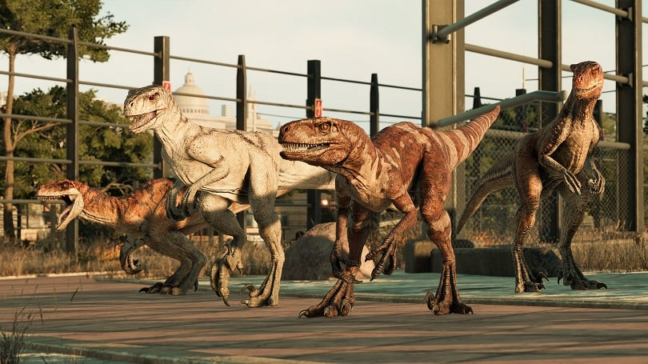
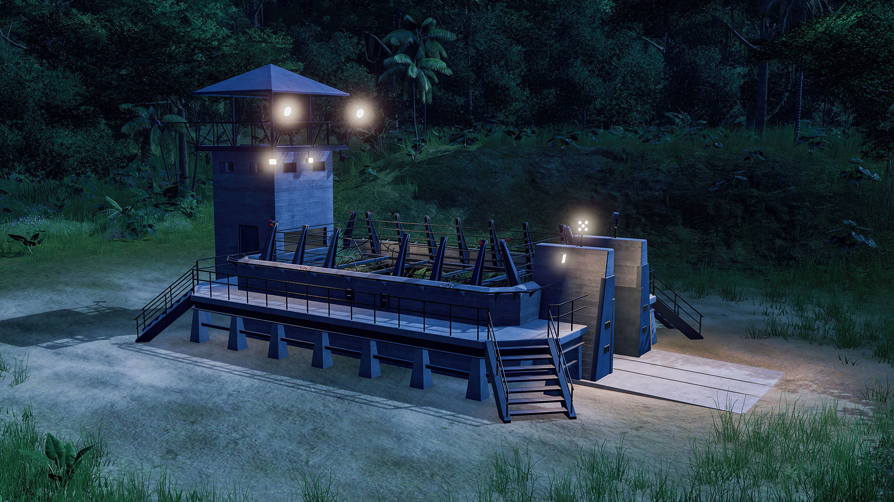
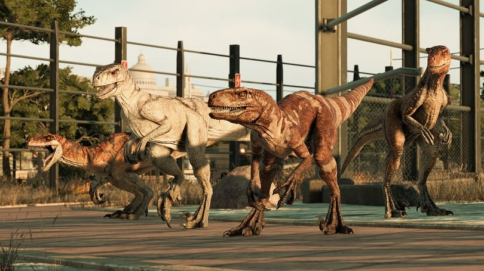
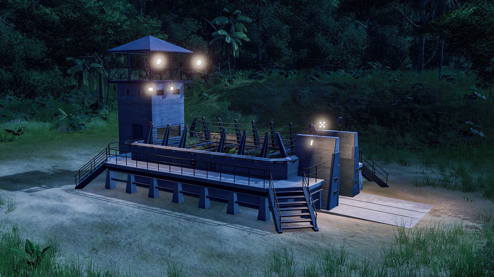
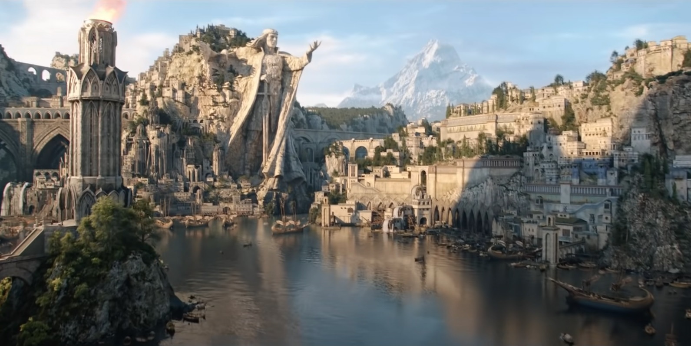
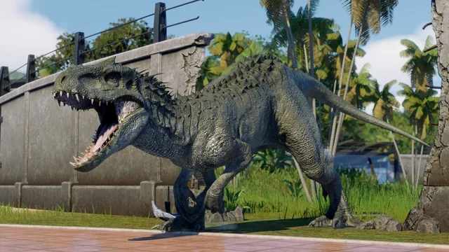
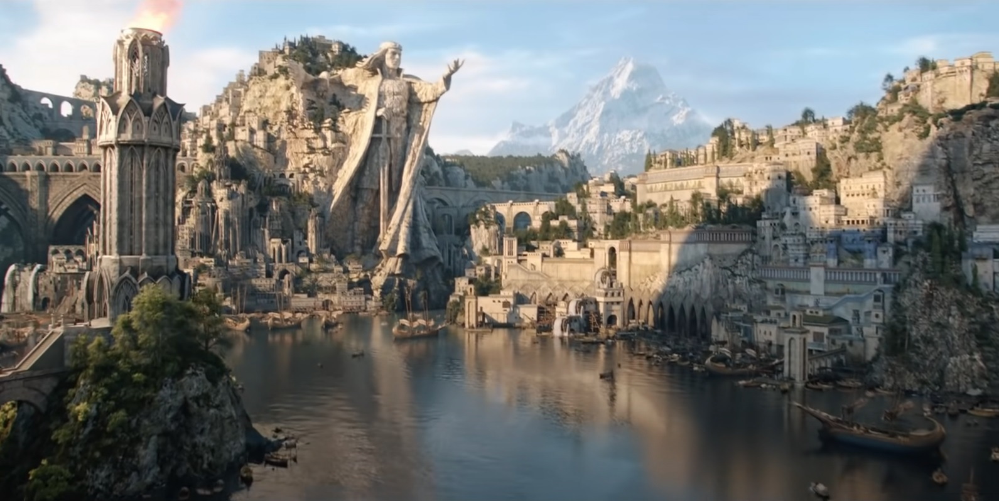
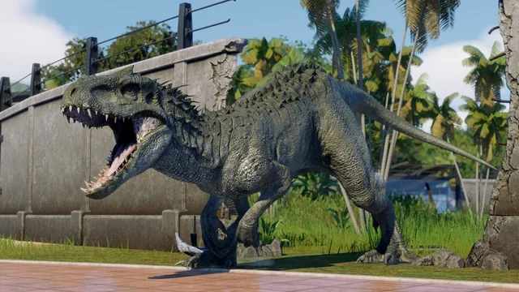

Armas banhadas a ouro são mais eficientes, mas também mais frágeis. Elas recebem +5 em acertos e causam +1 dado de dano no ataque final. No entanto, têm maior chance de quebrar, e ao quebrarem, o ouro é perdido.
As armas de ferro aumentam gradualmente o nível de eficiência da arma e são essenciais para reforçar sua estrutura, tornando-se um recurso indispensável em todas as etapas da evolução.
Black Ice são armas revestidas com uma combinação de metal, titânio e diamante, forjadas naturalmente nas áreas mais quentes. Sua fabricação exige temperaturas extremas e a habilidade de um especialista em armas. Armas com Black Ice causam +3 dados de dano e recebem um bônus de +30 no dano de potência.
Armas com materiais radioativos foram projetadas para suportar a instabilidade do material, sendo criadas por químicos e especialistas em armas e reações químicas. Altamente perigosas, essas armas possuem diferentes níveis de radiação, ajustados para não afetar o portador. Elas causam +20, +40 ou +60 de dano radioativo extra, dependendo da concentração da radiação utilizada.
Armas diabólicas são criadas para infligir dor e proporcionar satisfação a seus portadores na arte de matar. Ao eliminar um ser vivo, o portador regenera parte de sua sanidade devido à sua natureza diabólica. Contudo, o uso excessivo dessas armas pode causar o Efeito Diabólico Permanente, alterando a essência do usuário.
Forjadas por especialistas em armas de fogo ou corpo a corpo, essas armas utilizam obsidiana e minério da caveira como materiais principais. Elas concedem +2 dados de dano, +5 em acertos e eliminam automaticamente alvos com 10% ou menos de vida restante.
As armas no Ark podem ser aprimoradas com materiais raros como Titanita, Metal Primário, Titânio, Manganês, Lítio, Obsidiana, Níquel, Pedra Colossal, e Netherite, que não só aumentam sua resistência contra danos físicos, mas também oferecem capacidades únicas de bloqueio de danos elementares e ambientais. Esses materiais formam a estrutura de proteção da arma, permitindo que ela resista a ataques específicos, como fogo, eletricidade ou até mesmo jatos de lava. Para balancear e garantir a usabilidade de armas banhadas por minérios com propriedades passivas perigosas, como efeitos diabólicos, radioativos ou Black Ice, é necessário revesti-las com um dos materiais de proteção, garantindo estabilidade e permitindo que a arma continue funcional e eficaz contra uma variedade de ameaças.
Itens e armas que dependem de energia, como as de classe Tek, Arquiteto e Energética, requerem minérios específicos para atuar como reserva de energia, garantindo sua funcionalidade. O tipo de energia disponível varia conforme o minério utilizado, sendo essa funcionalidade desbloqueada apenas em níveis avançados de desenvolvimento dos sobreviventes. Entre os materiais mais usados para alimentação e condução de energia estão Ouro, Cobre, Ferro, Lítio, Extratos de Alumínio, Petróleo, Combustíveis, Urânio, Cobalto, Extrato de Ion, Eletrocristal, Elemento, Pedra Hypo Carga, Veia de Aether e Pedra Colossal, cada um oferecendo características únicas na estabilização e eficiência do consumo energético das armas e dispositivos.
A construção não é apenas uma necessidade, mas a chave para a sobrevivência. Cada pedra e viga erguida representa não só a defesa contra predadores e criaturas selvagens, mas também uma afirmação de determinação e adaptação. Construir uma fortaleza sólida, um abrigo seguro, é criar um bastião de esperança, onde você pode curar feridas, planejar e sonhar com um futuro onde a humanidade se reergue. Cada estrutura planejada com inteligência, com atenção a detalhes como portas, janelas e torres de observação, pode ser a diferença entre a vida e a morte. A construção, mais do que uma habilidade, é uma filosofia de resistência; é transformar o caos em força. Em um mundo como o de Ark, onde os desafios são imensos, apenas os mais resilientes sobrevivem — e uma boa construção é o primeiro passo para garantir que você seja um deles. Levante-se, construa sua fortaleza e prepare-se para o que está por vir.
 



 


